Main Left is at the top of section 102 on the third floor concourse. 12 ST Fiber (6 on the wall, 6 in the loose white box).

Main Right is at the top of section 103 on the third floor concourse. 12 ST Fiber all to the loose white box.

Main Reverse is at the top of section 111 on the third floor concourse. 6 ST Fiber

South Endzone is at the top of Section 116. 6 ST Fiber labeled as Section 116, 12 ST labeled South Endzone.

North Endzone is at the top of Section 107. 12 ST Fiber.

Section 118 is at the top of Section 118. 12 ST that run to 4440 (Location 8) as SC APC.

Near Right High Slash is at the top of section 211 on the 4th Floor Concourse. 12 ST Fiber pulled here. 6 ST Fiber labeled Near Right High Slash (FULL) and 6 Labeled New Near Right High Slash.

4440 is located behind section 201. A single door to the right of double doors. The fiber in the room is located at the top of the left DAK Rack. 6 ST and 24 SC APC to Truck Dock.

CenterHung is located on the cat walk in the center. Access this by the middle doors on the 4th floor north or south of venue.

The truck dock is located off of Floor Far Left. All of the Venue IO run through this box.

FFL is in the southwest corner of the arena between section K and L.

FFR is located in the North West corner of the arena between section F and G.

FNR is located in the North East corner of the arena between section C and D.

FNL is located in the South East corner of the arena between secton A and N.

Floor Pocket 1 is located on the near side of the court in front of section B and C.

Floor Pocket 2 is located on the far side of the court in front of section H.

The Fiber in the Men's locker room is located under the cabinets inside of their locker room behind section M.

Media room is located to the right of the elevator off Floor Far Left area.

Women's locker room has 2 SDI cables ran to the back of their film review room.

The truck dock is located off of Floor Far Left. All of the Venue IO run through this box.

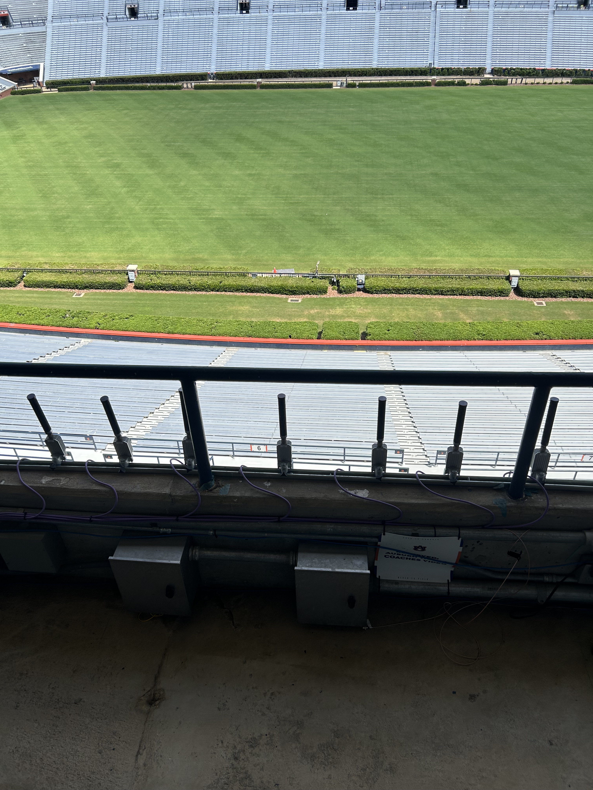
Left silver box on photo deck. Located near south 45 yd line.

Right silver box on photo deck. Located near south 45 yd line.

Silver box on the NorthWest corner on a brick wall at field level. Power is located on the west sideline fence.
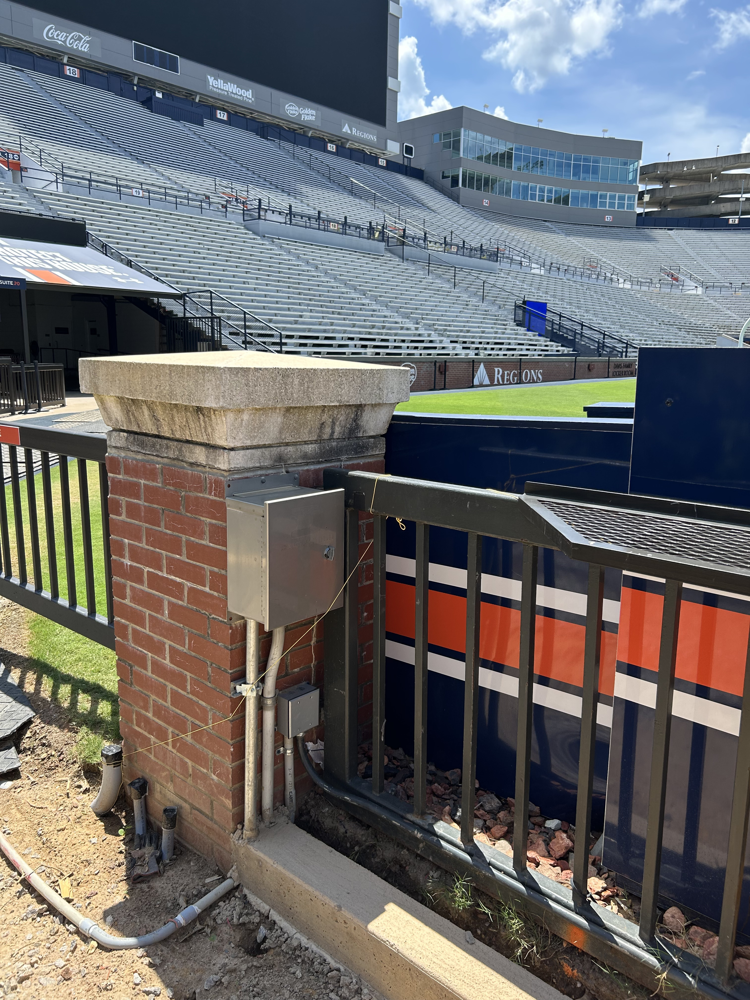
Silver box near the cheer stand on the SouthEast corner on a brick pillar at field level. Power is located on the east sideline fence.
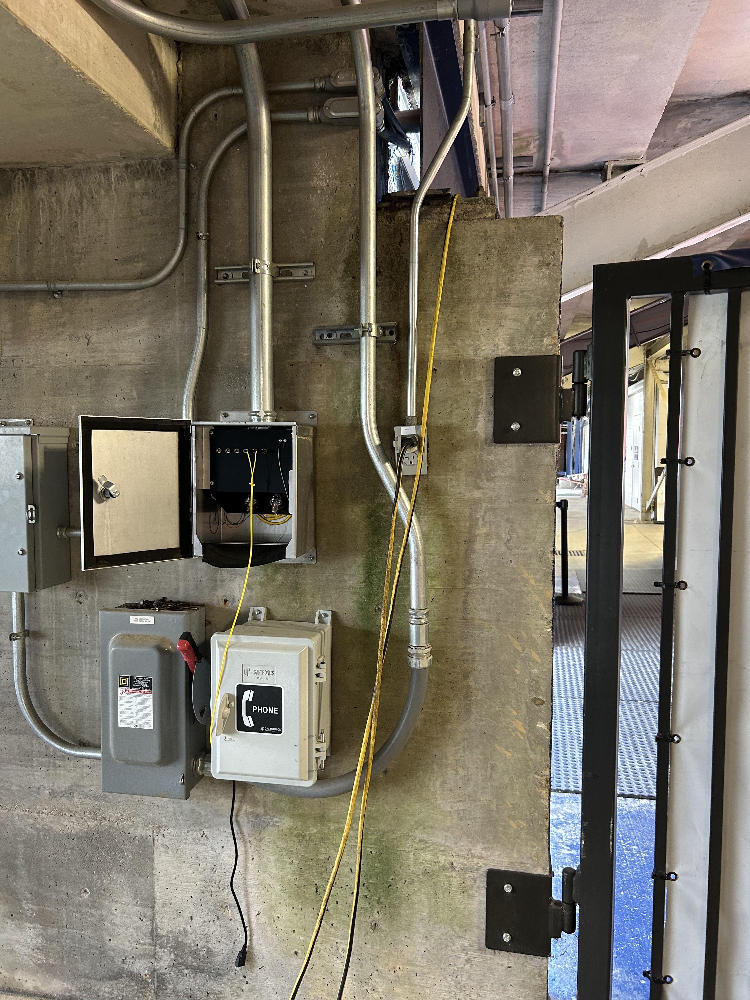
Silver box under the bleachers on the west side wall of the south tunnel.
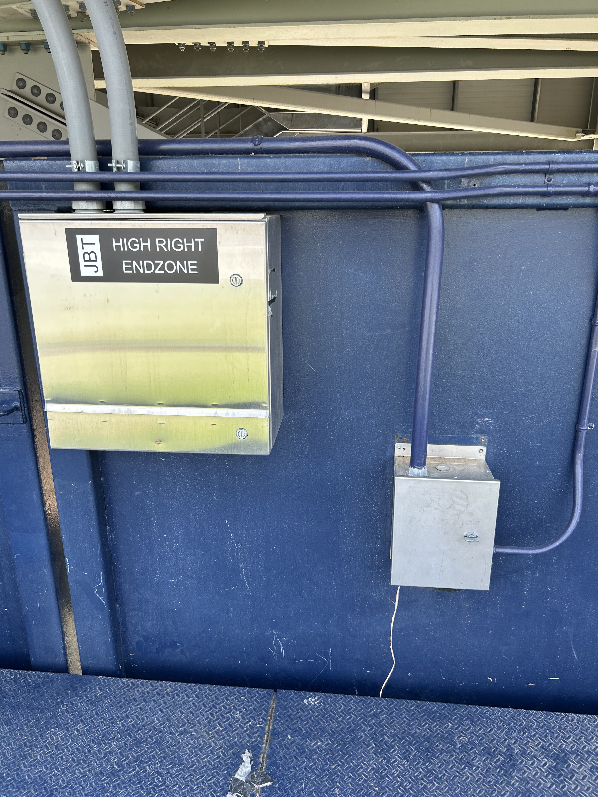
Silver box at the top of the south endzone under the videoboard clock.

Between section 12 and 13. 1415 is the main fiber hub for all connections that do not originate in the truck pedistal.

Located through the SouthEast tunnel - The media room has 6 ST Fiber.
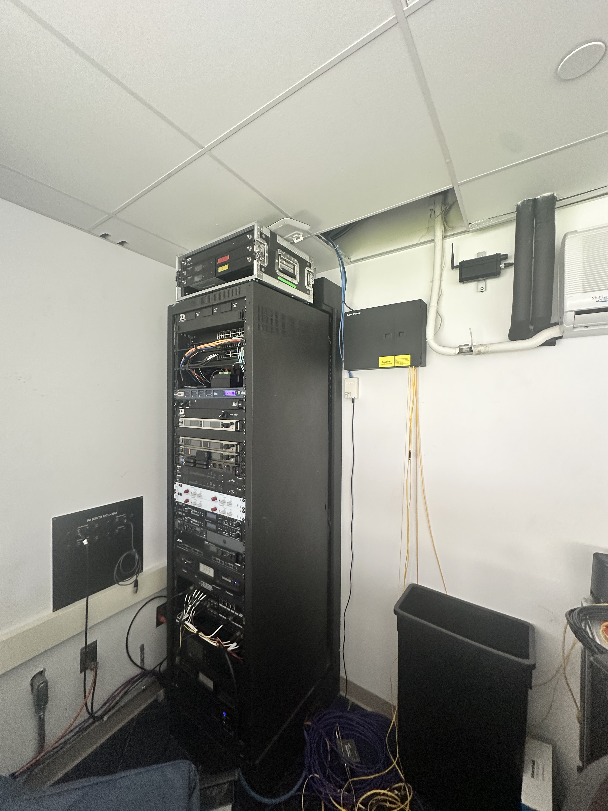
Take the SouthWest elevator to the third floor, take the last door on the left and its the room straight ahead. 12 ST Fiber located near the top of the wall in the back of the room.

Take the ramp upwards away from the third floor concourse. Silver box on the underside of the ramp - 12 ST Fiber.
Take the ramp upwards away from the third floor concourse. Silver box on the underside of the ramp - 12 ST Fiber.

Mostly used for team video - 12 ST at the top of the south videoboard.

Mostly used for team video - 12 ST at the top of the south videoboard.

24 LC - Located between the West side elevators - this pedestal holds the connection between 1415 and Truck Pedestal. It also holds some legacy cables from when this was the main stadium truck pedestal.

36 SC - This room holds some more fiber runs that are solely for team video.

Between section 12 and 13. 1415 is the main fiber hub for all connections that do not originate in the truck pedistal.
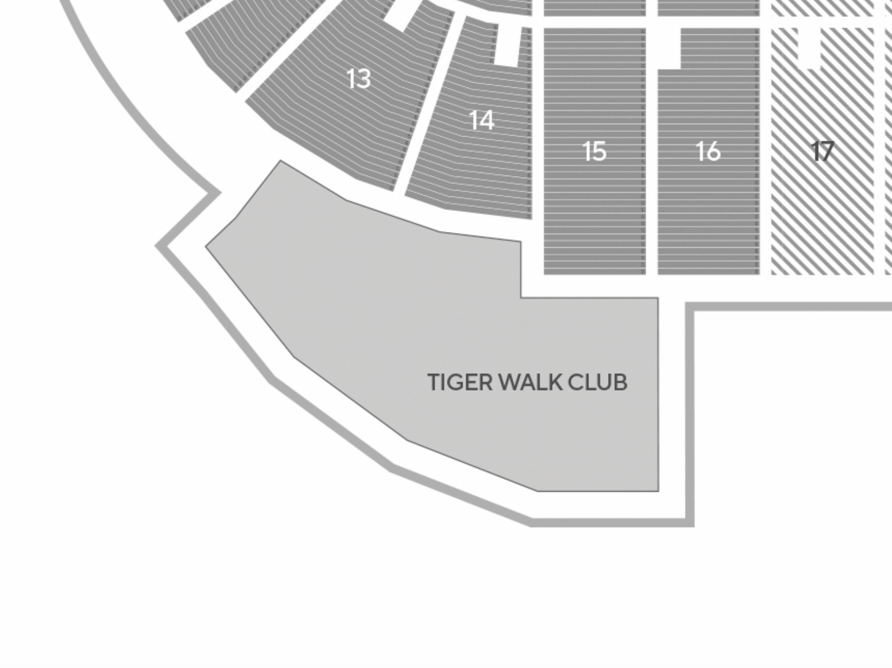
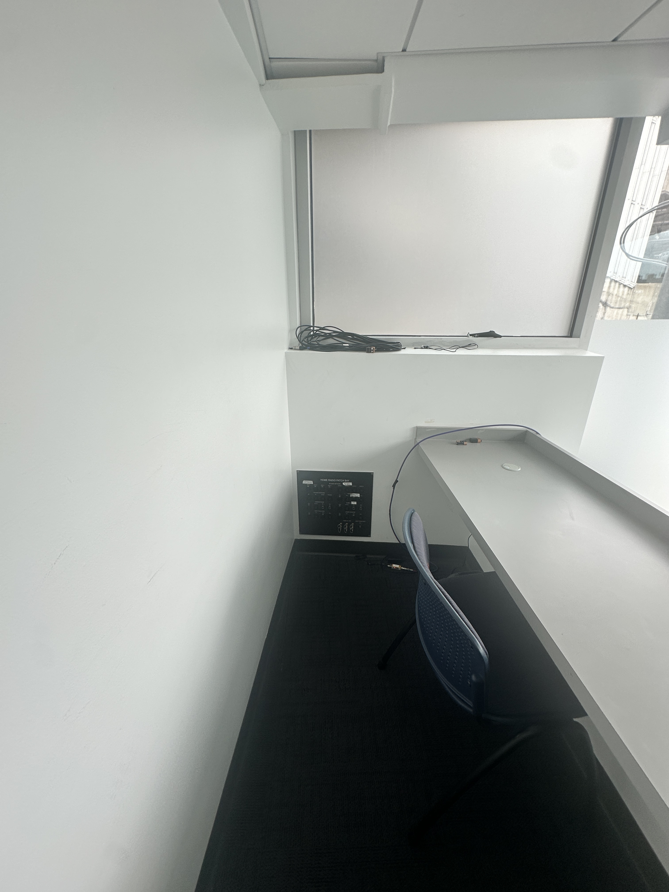
6 ST - 5th Floor of South West Recruiting Building
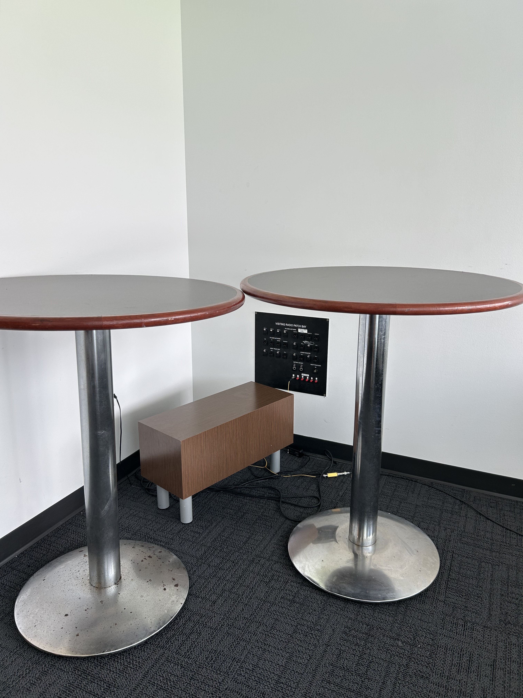
6 ST - 5th Floor of South West Recruiting Building
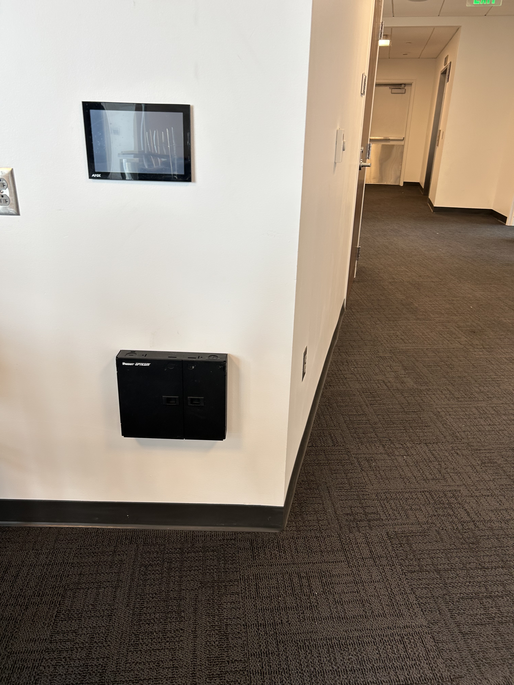
12 ST - 5th Floor of South West Recruiting Building

6 ST - Directly to your right when entering the glass doors at main entrance.
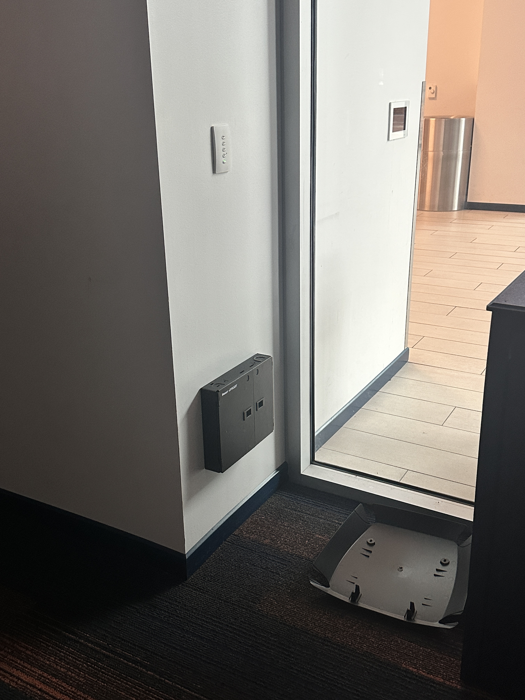
12 ST - Through 1st floor main entrance, the fiber box is near the floor on the blue wall.
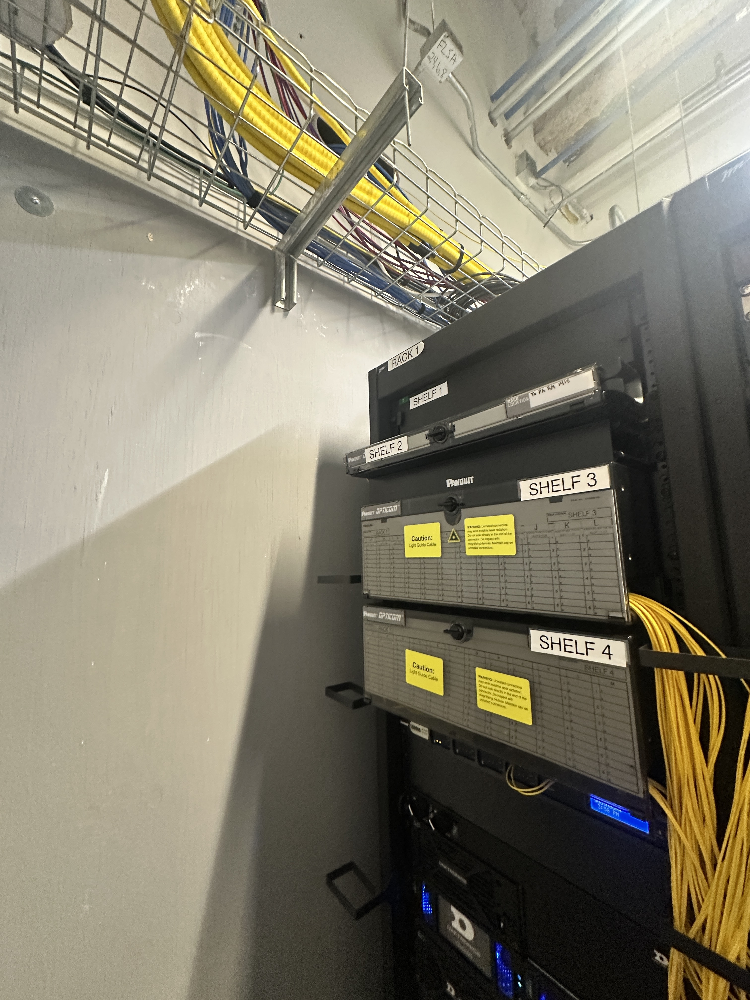
24 SC - Hallway across from the bathrooms on the 1st floor.
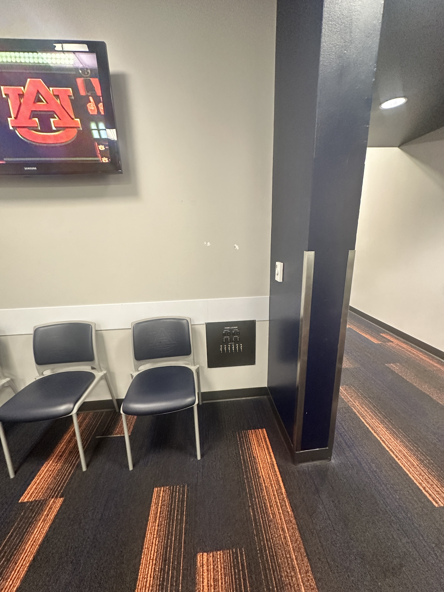
12 ST - Meeting room in the back of the locker room.
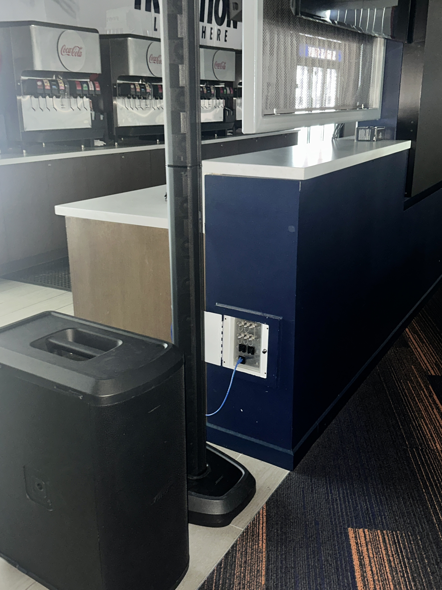
6 ST - Beside the large video wall on in the 1st floor TWC.
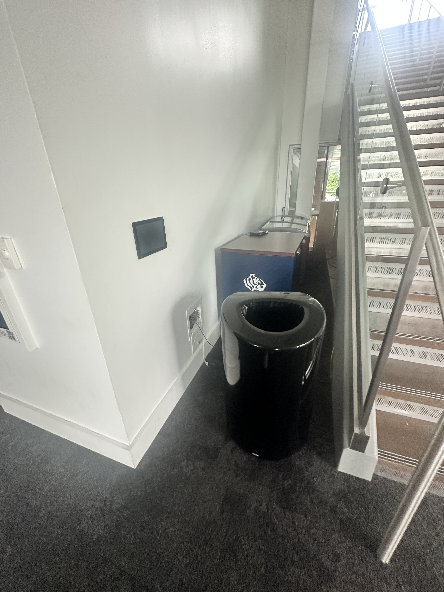
6 ST - No Power - Concourse Level - Just off elevator through the TWC doors by the stairs.
1st Floor - Orange
2nd Floor - Green
5th Floor - Purple